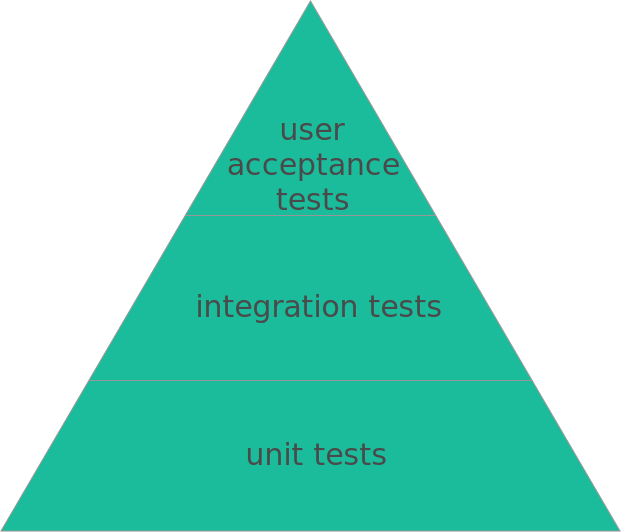
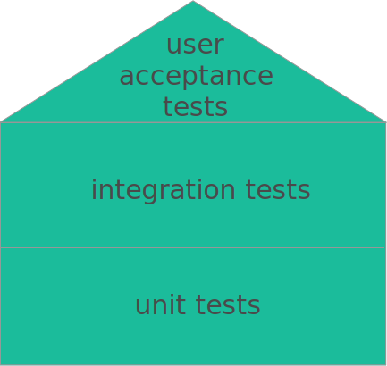

Introduction to Testing
Intro to automated testing philosophies, uses, and techniques with application to JS testing in Jasmine
Welcome!
Girl Develop It is here to provide affordable and accessible programs to learn software through mentorship and hands-on instruction.
Some “rules”
- We are here for you!
- Every question is important
- Help each other
- Have fun
Who to bug & where to get stuff
Your beautiful TAs! Say hi, y’all!
Lulu
Frufru
Where to get these gorgeous slides:
http://awesome-link.github.io
The chick teaching this:
courtneys@girldevelopit.com
Stuff you need for this course
- A computer that can run JavaScript and has Node and npm installed on it.
- A basic understanding of JavaScript, especially functions.
Tell us about yourself!
Your name and pronouns?
What are you hoping to get out of this class?
What song or meme are you really digging right now?
What we’ll be covering:
- What automated testing is
- Why automated testing is important
- Kinds of testing, testing philosophies and approaches
- Common criticisms/objections to automated testing
- Practicum: Unit testing vanilla JS with Jasmine
- Best practices for each kind of testing
Cool, so what’s this automated testing thing?
Automated tests are pieces of code that run your original code.
They can be very specific and only test a function or a part of a function, or they can be coarse-grained and test an actual end-to-end scenario.
The real power of any kind of automated test is that is automated— it’s a piece of code and you can do some cool stuff with it.
Why should I write automated tests?
Minimize or prevent regressions
This applies to testing more broadly, but it deserves to be said explicitly:
- The only way to know if your code work is to test it.
- Just because you tested it by hand doesn’t mean you hit all the edge cases.
- Also, just because your code worked when you tested it by hand that one time does not mean it works now.
Isolate bugs
- If a regression or bug does crop up, you know where it is.
- The faster you can pinpoint the source of an error, the faster you can fix it.
Confidence in refactoring/rewrites
- It’s nerve-wracking to try to fix code when you’re not sure if you’ll break something in the process.
- This is especially true if the code you’re changing is significantly complex/important.
- So people usually don’t clean it up. This is one very real reason for code rot. (It is not a coincidence that the most important pieces of code are often the ugliest.)
- It also makes it easier to sell updating parts of the codebase if you can show you will have a high degree of confidence that customers will not get broken code.
Minimize Feedback Cycle:
Speed & Portability
- Automated tests run much faster than manual testing (they're code!)
- You know very quickly if you’ve broken any functionality
- Ideal setup: your tests run every time the code changes. This makes the feedback cycle the shortest it can be.
- You can run these tests in every environment*, including as part of the build process.
Continuous deployment
- If your tests adequately cover the use cases in your app and they run with the build, then you can set up the build to deploy to prod after all the tests pass.
- No humans needed, so this is wicked fast.
- This is what most companies either do or aspire to do because it means you can push out code all. the. time. serious #bizzyV
Tests as documentation
- If you’ve written good tests
Responsibility for code quality
- Our job is to solve problems, not write code.
- It’s easy to throw problems onto someone else.
- If you get used to doing that, it’s easy to believe that code quality issues aren’t your problem (spoiler: they are).
- It’s also easy to get sloppy because you expect someone else will find and/or fix your bugs for you.
- This depends on your team, but ideally, this responsibility is shared, either amongst your team or a subset of your team.
Being a better developer
- Writing good test cases means thinking critically about the problem you’ve been given to solve.
- This takes a certain mindset, but developing that mindset will make you a better engineer and more generally, a better problem solver. After all, what is programming but the application of logic? </philosophy>
If you’re doing test driven development (TDD) you get extra benefits.
Test Driven Development
You write the tests before the code.
Tests are first-class citizens, not an afterthought.
Mantra: Red, Green, Refactor
- RED: Because you’ve written the test before the code, the test should fail. You also need to make sure the test fails in the way you expect. Bonus points for making sure you get a useful error message when it fails.
- GREEN: Fix the test by writing the necessary code.
- REFACTOR: Once the test passes, take another look at the code and see if you can make it better, DRYer, faster, stronger. Because you have the test there as your safety net, you’ll know immediately if your refactor breaks anything.
Why do TDD?
Requirements clarification / reduce time waste
- We don’t always get clear-cut requirements.
- When you write the test first, you have to know upfront exactly what's being asked of you, and that's ideal.
- If you can’t write the test, you don’t have enough information to write the code.
- You also know where you’re missing clarity. You can take that information back to the appropriate people and work out what's needed before you waste development time.
Example
Original requirement:
Create a user with the information in the create user form if it doesn’t already
exist.
Some questions:
- What determines if the user exists? The username? The email? Something else?
- Which information is required? Can the user be created without some information?
- What if the user does exist? Is that an error? A no-op? Should the user information be updated?
Only write what you need
- Related to clarifying the requirements is the idea of gold-plating. If we don’t really know what's expected, we are likely to add extra code that doesn’t really do anything.
- But extra code means extra complexity and more stuff we have to maintain.
- Because you have a gauge to determine when you’re done (the tests), you only write as much as you need to to get the tests to pass. No more, no less.
Write testable code
- Tests written after the code has been written usually results in less testable or completely un(unit)testable code.
Squash bugs better & faster
The first step of debugging an issue is to reproduce it. You can do that by writing a test! This is awesome because:
- This helps to isolate the bug
- You can fix the bug faster because you can reproduce it reliably and quickly
- You have more confidence that you’ve really fixed the issue
- Now that case is part of the test suite, so you are also assured that you won’t have that regression again
Being an even better developer
- In my experience, the very best coders have been TDDers.
- TDD requires an analytical mindset and certain degree of discipline, qualities that are not bad to have.
- Some of them can also be a little snooty, but so can Ruby devs, and we still love them... Well, most of them.
Basically, testing takes you from

to
What kinds of testing are there?
disclaimer
Testing is kind of like Agile— everyone does it a little bit differently.
I’m going to give my take on how to
break down the testing stack, but you might run into other terminology.
What kinds of testing are there?
- Unit tests
- Integration tests
- User acceptance tests / end-to-end tests
Unit testing
- This is the most ubiquitous kind of testing.
- Here, you test at the finest-grained level. You’re testing a function or a part of a function.
- Generally, this is where you would mock data (we'll talk about mocking a little later).
- This level of granularity means that you’ll have a lot of them, but they also run the fastest.
Integration testing
- Where you test how two pieces of code interact with each other. Also used to describe tests that touch a database.
- These can be a little more complicated than unit tests, but they are vital to make sure the various parts of the system are working together as expected.
- You should not mock in integration tests.
End-to-end or
User acceptance tests
- You are testing the application from the perspective of a user. E.g., frameworks like Selenium allow you to mimick a user clicking elements on a page.
- This means it's the coarsest-grained kind of test.
- These tend to take the longest to run and are the most brittle. They're definitely important, but you don’t want as many of these as unit tests. They tend to take the most development effort to setup and maintain.
Something To Ponder:
If you don’t have any tests, these are the tests you want to start with. Trying to make up unit or integration tests is even more time-consuming and sometimes isn’t even possible. At least with user acceptance tests, you know when something is broken.
Testing Philosophies
Proportions
Pyramid
The traditional formula
Proportions
House
You still want fewer end-to-end tests
Test Coverage Metrics
- This is the traditional metric for test success: You measure how many lines of your code is tested by your test suite (there are tools for this).
- Just like trying to meet any metric for the sake meeting the metric, this has drawbacks.
- This can cause extra work or extra code for no tangible benefit. And just like with any metric, you can game the system.
- My advice: Make sure you’re testing what your users will use. If your code base is tight, then you will have a high test coverage percentage as a matter of course.
Behavior-driven development (BDD)
- Grew out of TDD and incorporates large parts of domain-driven design, especially the concept of ubiquitous language.
-
Helps focus tests by giving guidance on:
- what to test and what not to test
- how to name tests
- how much to test in one test case
- how to understand why a test fails
Behavior-driven development (BDD)
- Looks like a user acceptance criteria and many BDD frameworks use a syntax that mirrors this
- Can use with user scenarios
- Can help with getting more clear-cut requirements
Behavior-driven development (BDD)
BDD example (Gherkin): Library
Scenario: Checkout book
Given the library is open
And the patron's library card is valid
When the patron tries to check out book
Then ensure the book is added to the patron's account
And ensure the patron receives a receipt
And ensure the patron's library card is returned
An Incomplete Cheat Sheet Of Testing Libraries
| JavaScript | Mocha, Chai, Jasmine, Karma, Enzyme, Jest |
| Ruby | Rspec, minitest |
| JVM | JUnit, Spock |
| Python | unittest |
| E2E |
Selenium (multi-language)
protractor (Angular… ish) |
| BDD |
Cucumber (multi-language)
Spock, JBehave (JVM) Jasmine, Mocha (JS) Spinach (ruby) |
Next time on Adventures of a Testing b0$$
In the second part of this course, we’ll be writing tests for vanilla JS code using Jasmine as our test runner.